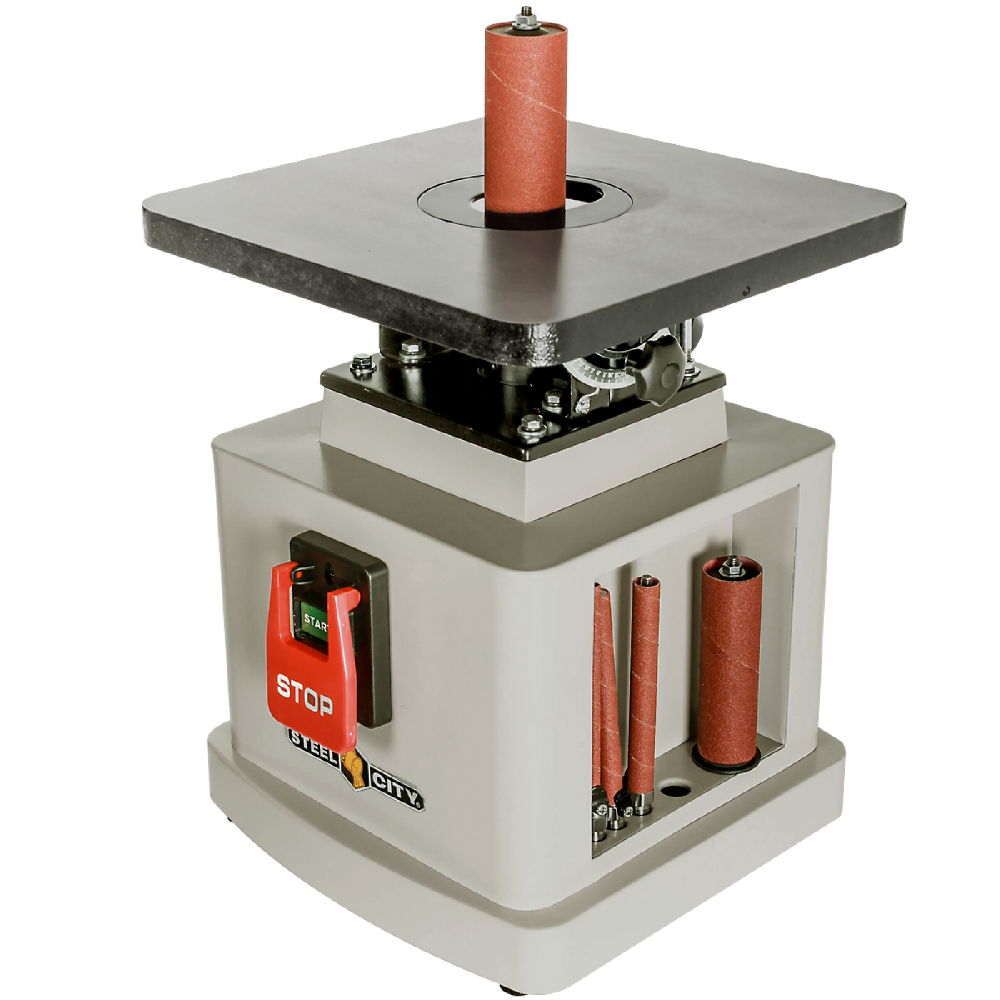

|
Safety in all machines:
|
|

Band Saw A bandsaw is a power saw with long sharp blade consisting of many metal teeth.
The band saw is mainly used in woodworking and metalworking.
The purpose of a band saw is to cut out shapes in wood, plastic, or metal.
One of its advantages over other saws is its ability to cut out irregular or curved sides and shapes.
|

Disc Sander Disk sanders are prefabricated disks of sand paper.
The Disk Sander is used to smooth materials such as woods and plastics.
It is also used to remove small amounts of waste material. |

Drill Press The drill press is a machine used for making holes in hard surfaces such as wood and plastic.
The drill is held in a rotating spindle and is fed into the work piece. |

Oscillating Spindle Sander
An oscillating spindle sander or OSS for short is used for sanding curves.
An OSS is a machine which consists of a tabletop witch a sanding drum sticking out through a hole in the top of the table.
The drum is covered with abrasive sleeve, while also rotating and moving up and down. |